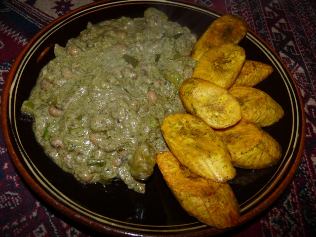
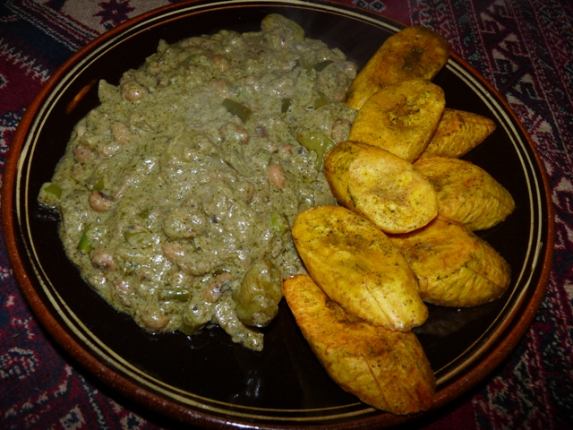
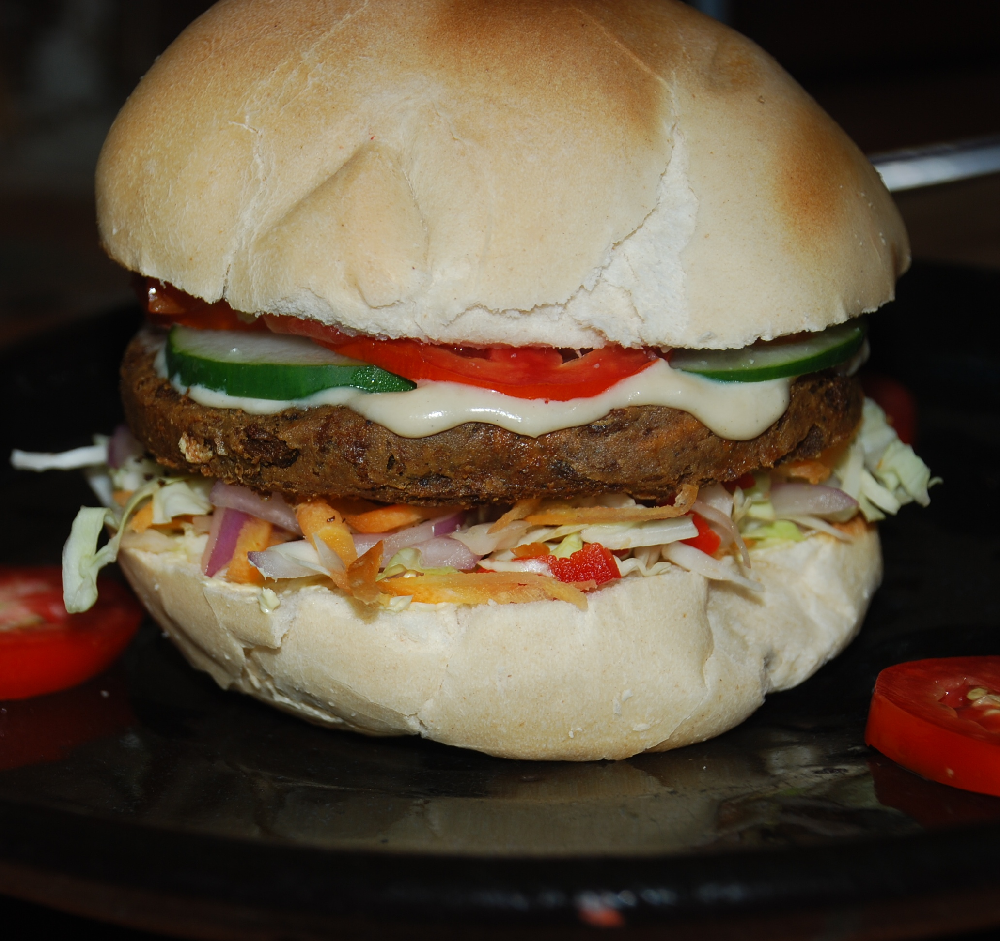
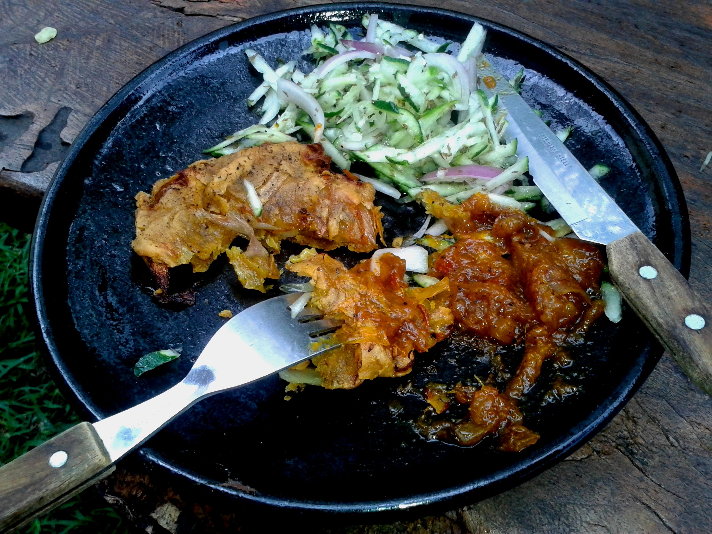
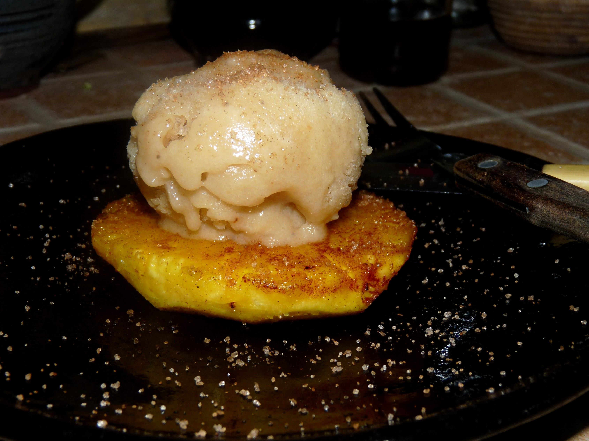

In Ghana, when you hear Vegetarian it's usually Vegan (No Meat, No Dairy, No Egg), also refered to as "ital" (Vital). We strive to produce healthy, wholesome food with Good Nutritional Balance and Wonderful Flavours. Serving a variety of Traditional Ghanaian meals as well as many other delicious dishes inspired by local ingredients, with an exciting twists. The food is served in a Stylishly Simple Summer Hut surrounded by lush, green vegetation.
 


All our Ghana-essentials like Red-Red, Palava Sauce, Jollof Rice or Wakye are even more amazing with their Vegan/ital substitute for meat, in the form of tasty Tofu-squares or Khebabs, guaranteed to be loved by vegetarians and non-vegetarians alike.
For something a little different try our 'Cocoa Cook-up': a combination of Chocolate & Spices to make a Rich, Dark Savoury Sauce, so fitting for Ghana (one of our biggest Exports being Cocoa), 'Coconut Cook&Curry': with Aromatic Coconut Milk Sauce & Freshly made Green Curry Paste... or 'Groundnut Gumbo': a creamy, Spicy, sweet-potatoe & Groundnut/peanut dish inspired by a recipe from Mali.
 
With exciting snacks including Plantain-chips & guacamole and a number of exotic salads to choose from as well as a delicious choice of Home-made cakes and Vegan ice-cream, there is something for everyone.

We are aware that a Vegan Diet of Fresh, Local ingredients is not only the Healthiest for our bodies, but also for the Earth. The raising of Cattle produces three of the most harmful gasses contributing to Global Warming (Carbon dioxide, Methane & Nitrous Oxide). It is also a Major cause of water pollution and requires a staggering 2,464 gallons of water for the production of each pound of meat.
So conscientiously cutting down on the consumption of meat in your Diet - if not giving it up completely - would massively effect your 'Carbon Footprint'. We know how much you will enjoy our alternatives to meat, egg and dairy, and how little you will miss it when you leave it out of your diet.